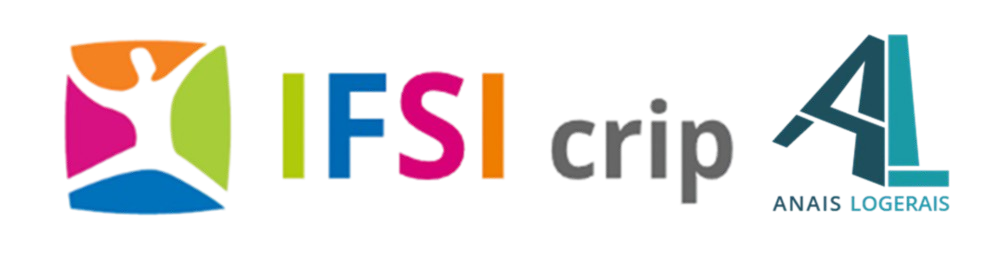

🏥 Intégration des Savoirs et Posture Professionnelle
Cartes mentales, infographies, ressources diverses
🔻 📘 5.1 - Stage 1 > Longue Durée - SMR en Clinique
🔻 📘 5.2 - Stage 2 > Courte Durée - USIC et USIP au CHU de Montpellier
🔻 📘 5.3 - Stage 3 > Soins Psychiatriques - UPUP au CHU de Montpellier
🔻 📘 5.4 - Stage 4 > semestre 4
🔻 📘 5.5 - Stage 5 > semestre 5
🔻 📘 5.6 - Stage 6 > semestre 6
🔻 📘 5.7 - Stage 7 > semestre 6
🔻 📘 5.8 - Stage 8 > semestre 6